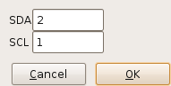
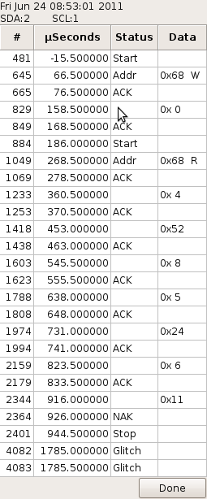

Specific settings for TWI data analysis are controlled from this dialog:  The various fields are:
 The analysis is displayed in a separate window as a multi-column table. The sample number and time from the trigger are displayed in the first two columns. The third column shows the status changes in the signal. The data byte value is shown in the last column.